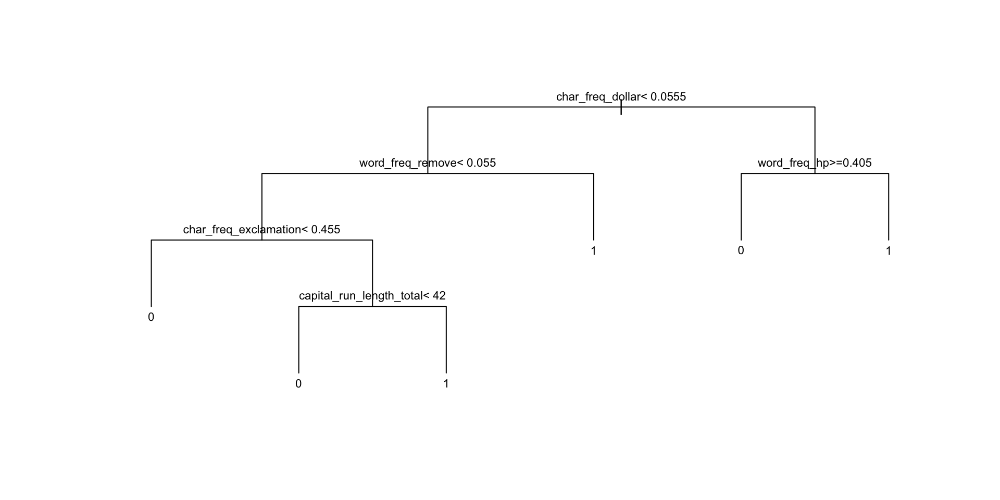
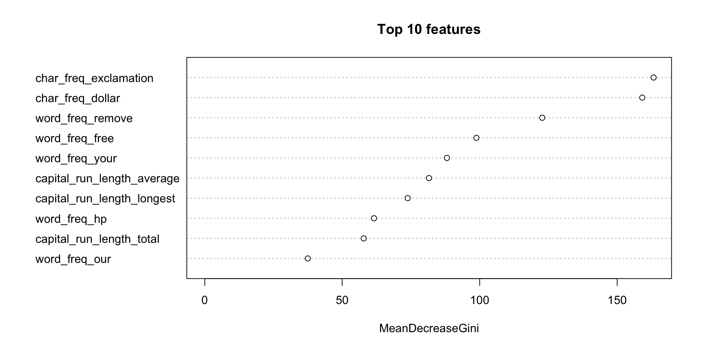

[1] 4601 58
0 1
2788 1813 第二十一章：分類模型
實踐大學
2026-06-07
分類預測的是類別而非數字。貫穿本章的例子：4,601 封郵件、57 個數值特徵、一個標籤——是不是垃圾郵件：
[1] 4601 58
0 1
2788 1813 切成訓練集與測試集——衡量分類器唯一誠實的方式：
透過 logit 連結建模垃圾郵件的機率：
\[\log \frac{p}{1-p} = c_0 + c_1 x_1 + \cdots + c_n x_n\]
Estimate Std. Error z value Pr(>|z|)
(Intercept) -1.759095227 0.0659533885 -26.671795 1.000164e-156
word_freq_free 1.293936372 0.1163358590 11.122421 9.758760e-29
word_freq_money 3.461685530 0.3511920670 9.856958 6.395761e-23
capital_run_length_total 0.001213516 0.0001225411 9.902937 4.042276e-23
char_freq_exclamation 2.265879949 0.1610712761 14.067561 6.010716e-45正係數提高垃圾郵件的勝算；exp(coef) 給出勝算比。
predicted
actual 0 1
0 899 60
1 240 402[1] 0.8126171混淆矩陣把偽陽性（好信被攔）與偽陰性（垃圾信放行）分開——多數應用中兩種錯誤代價不同，門檻值應據此調整。
LDA 把每個類別建模為高斯分布，畫出最佳線性邊界：
[1] 0.7576515qda() 允許彎曲邊界。loglin()／poisson 家族的 glm）扮演對應角色。完全不建模型：每個點由 \(k\) 個最近的訓練點投票決定：
[1] 0.7482823Tip
kNN 要先標準化特徵。 距離法會被單位最大的變數宰制；先 scale 再上。
樹用一連串是非題切割特徵空間——完全可解釋：
[1] 0.8838226
printcp() 與 prune() 以成本複雜度修剪控制過度配適。
nnet() 配適單隱藏層網路——經典主力。e1071 套件的 svm()）尋找最大邊界，並以核函數處理非線性。數百棵樹建立在拔靴樣本上，投票平均：
[1] 0.9406621
通常是開箱即用準確率最高的選擇，還免費附贈特徵重要性排名——代價是可解釋性。
| 需求 | 選擇 |
|---|---|
| 可解釋的係數／勝算 | 邏輯斯迴歸 |
| 可解釋的規則 | 分類樹 |
| 即插即用的最佳準確率 | 隨機森林 |
| 小資料、平滑邊界 | LDA / kNN |
| 高維度、重視邊界 | SVM |
不論用哪個模型：訓練／測試切分（或交叉驗證）、混淆矩陣與錯誤成本永遠優先 (Hastie et al. 2009)。第二十二章將視野擴大到機器學習的其他面向。
版權聲明。 本教材改編自 Joseph Adler 所著 R in a Nutshell: A Desktop Quick Reference（第二版，O’Reilly Media）。所有權利均由原作者與出版者保留。
僅供非商業用途。 本教材嚴格限定用於教育目的，不得用於商業獲利。
適當標註出處。 任何對本教材的重製、散布或使用，都必須適當標註原始出處。

R in a Nutshell: A Desktop Quick Reference